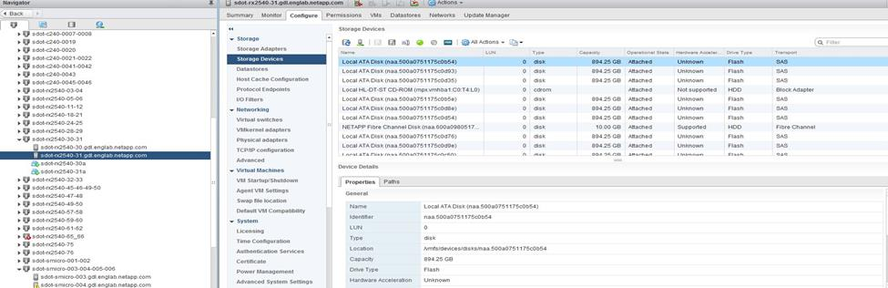

ドキュメントの変更をリクエスト
ドキュメントの変更をリクエスト GitHub で編集
GitHub で編集 寄稿者向けガイド
寄稿者向けガイドローカル接続ストレージ向けのソフトウェア RAID サービス
寄稿者
ソフトウェア RAID は、 ONTAP ソフトウェアスタック内で実装される RAID 抽象化レイヤです。FAS などの従来型 ONTAP プラットフォーム内の RAID レイヤと同じ機能を提供します。RAID レイヤはドライブパリティ計算を実行し、 ONTAP Select ノード内の個々のドライブ障害に対する保護を提供します。
ONTAP Select には、ハードウェア RAID 構成とは関係なく、ソフトウェア RAID オプションも用意されています。ハードウェア RAID コントローラは、使用できない場合や、 ONTAP Select をスモールフォームファクタコモディティハードウェアに導入する場合など、特定の環境では望ましくない場合があります。ソフトウェア RAID では、このような環境も対象となるように、使用可能な導入オプションが拡張されご使用の環境でソフトウェア RAID を有効にするには、次の点に注意してください。
-
Premium または Premium XL ライセンスがある場合に使用できます。
-
ONTAP ルートディスクとデータディスクでは、 SSD または NVMe （ Premium XL ライセンスが必要）ドライブのみがサポートされます。
-
ONTAP Select VM ブートパーティション用に別のシステムディスクが必要です。
-
別のディスク（ SSD または NVMe ドライブ）を選択して、システムディスクのデータストアを作成します（ NVRAM 、 Boot / CF カード、コアダンプ、およびマルチノードセットアップのメディエーター）。
-
-
メモ *
-
サービスディスクとシステムディスクは同じ意味で使用されています。
-
サービスディスクとは、 ONTAP Select VM 内で使用される VMDK で、クラスタリング、ブートなどのさまざまな項目を処理するために使用されます。
-
サービスディスクは、ホストから見た単一の物理ディスク（総称してサービス / システム物理ディスク）に物理的に配置されます。その物理ディスクには DAS データストアが含まれている必要があります。ONTAP Deploy は、クラスタの導入時に ONTAP Select VM 用にこれらのサービスディスクを作成します。
-
-
ONTAP Select システムディスクを複数のデータストアまたは複数の物理ドライブに分割することはできません。
-
ハードウェア RAID は廃止されていません。
ローカル接続ストレージ向けのソフトウェア RAID 構成
ソフトウェア RAID を使用する場合は、ハードウェア RAID コントローラがないことが理想的ですが、システムに既存の RAID コントローラがある場合は、次の要件に従う必要があります。
-
ハードウェア RAID コントローラを無効にして、ディスクがシステム（ JBOD ）で直接認識できるようにする必要があります。この変更は通常、 RAID コントローラの BIOS で行うことができます
-
または、ハードウェア RAID コントローラが SAS HBA モードになっている必要があります。たとえば、一部の BIOS 設定では、 RAID に加えて「 AHCI 」モードが許可されており、これを選択すると JBOD モードを有効にできます。これによりパススルーが有効になり、物理ドライブがホスト上と同じように認識されます。
コントローラでサポートされるドライブの最大数によっては、追加のコントローラが必要になる場合があります。SAS HBA モードでは、速度 6Gb/ 秒以上の IO コントローラ（ SAS HBA ）がサポートされていることを確認してください。ただし、ネットアップが推奨するのは速度 12Gbps です。
他のハードウェア RAID コントローラモードや構成はサポートされていません。たとえば、一部のコントローラは、ディスクのパススルーを意図的に有効にする RAID 0 のサポートを許可していますが、望ましくない結果が生じる可能性があります。サポートされる物理ディスクのサイズ（ SSD のみ）は 200GB~16TB です。

|
管理者は、 ONTAP Select VM で使用されているドライブを追跡し、ホスト上のドライブが誤って使用されないようにする必要があります。 |
ONTAP Select の仮想ディスクと物理ディスク
ハードウェア RAID コントローラを使用する構成では、 RAID コントローラによって物理ディスクの冗長性が提供されます。ONTAP Select には、 ONTAP 管理者がデータアグリゲートを設定できる 1 つ以上の VMDK が表示されます。これらの VMDK は RAID 0 形式でストライピングされます。 ONTAP ソフトウェア RAID の使用は冗長で非効率、かつハードウェアレベルでの耐障害性のために効果的であるためです。さらに、システムディスクに使用される VMDK は、ユーザデータの格納に使用される VMDK と同じデータストアに配置されます。
ソフトウェア RAID を使用する場合、 ONTAP Deploy は、 NVMe 用の一連の仮想ディスク（ VMDK ）と物理ディスクの raw デバイスマッピング（ RDM ）を ONTAP Select に提供します。また、 NVMe 用のパススルーデバイスまたは DirectPath IO デバイスもに提供します。
次の図では、この関係を詳しく説明し、特に、 ONTAP Select VM 内部で使用される仮想ディスクと、ユーザデータの格納に使用される物理ディスクの違いを示します。
-
ONTAP Select ソフトウェア RAID: 仮想ディスクと RDM* の使用

システムディスク（ VMDK ）は、同じ物理ディスク上の同じデータストア内にあります。仮想 NVRAM ディスクには、高速で耐久性の高いメディアが必要です。したがって、 NVMe データストアと SSD タイプのデータストアのみがサポートされます。

システムディスク（ VMDK ）は、同じ物理ディスク上の同じデータストア内にあります。仮想 NVRAM ディスクには、高速で耐久性の高いメディアが必要です。したがって、 NVMe データストアと SSD タイプのデータストアのみがサポートされます。NVMe ドライブをデータに使用する場合は、パフォーマンス上の理由からシステムディスクも NVMe デバイスにする必要があります。All NVMe 構成のシステムディスクに適しているのは、 Intel Optane カードです。
|
|
現在のリリースでは、 ONTAP Select システムディスクを複数のデータストアまたは複数の物理ドライブに分割することはできません。 |
各データディスクは、小規模なルートパーティション（ストライプ）と 2 つの同一サイズのパーティションという 3 つの部分に分割され、 ONTAP Select VM 内に 2 つのデータディスクが作成されます。シングルノードクラスタと HA ペアのノードの次の図に示すように、パーティションは Root Data Data （ RD2 ）スキーマを使用します。
「 P 」はパリティ・ドライブを示します。「 DP 」はデュアル・パリティ・ドライブを表し、「 S 」はスペア・ドライブを表します。
-
シングルノードクラスタ用の RDD ディスクパーティショニング *

-
マルチノードクラスタ（ HA ペア）の RDD ディスクパーティショニング *

ONTAP ソフトウェア RAID は、 RAID タイプとして RAID 4 、 RAID-DP 、および RAID-TEC をサポートしています。これらは、 FAS プラットフォームと AFF プラットフォームで使用される RAID 構成と同じです。ルートプロビジョニング ONTAP Select では、 RAID 4 と RAID-DP のみがサポートされます。データアグリゲートに RAID-TEC を使用する場合、全体の保護は RAID-DP になります。ONTAP Select HA は、各ノードの構成を他のノードにレプリケートするシェアードナッシングアーキテクチャを使用します。つまり、各ノードは、ルートパーティションと、そのピアのルートパーティションのコピーを格納する必要があります。データディスクにはルートパーティションが 1 つあるため、最小データディスク数は ONTAP Select ノードが HA ペアの一部かどうかによって異なります。
シングルノードクラスタの場合、すべてのデータパーティションを使用してローカル（アクティブ）データが格納されます。HA ペアの一部であるノードでは、 1 つのデータパーティションを使用してそのノードのローカル（アクティブ）データが格納され、 2 つ目のデータパーティションを使用して HA ピアのアクティブデータがミラーリングされます。
パススルー（ DirectPath IO ）デバイス vs.RDM （ raw デバイスマップ）
VMware ESX では、 NVMe ディスクを Raw デバイスマップとしてサポートしていません。ONTAP Select で NVMe ディスクを直接制御するには、 ESX で NVMe ドライブがパススルーデバイスとして設定されている必要があります。NVMe デバイスをパススルーデバイスとして設定するには、サーバ BIOS でサポートが必要であり、システム停止が伴うため、 ESX ホストのリブートが必要になることに注意してください。さらに、 ESX ホストあたりの最大パススルーデバイス数は 16 です。ただし、 ONTAP Deploy ではこれが 14 に制限されています。この ONTAP Select ノードあたりの上限は 14 個です。つまり、すべての NVMe 構成で、容量を犠牲にして非常に高い IOPS 密度（ IOPS/TB ）が実現します。また、ストレージ容量の大きいハイパフォーマンス構成が求められる場合は、大容量の ONTAP Select VM 、システムディスク用の Intel Optane カード、データストレージ用の公称数の SSD ドライブを推奨します。
|
|
NVMe のパフォーマンスを最大限に引き出すには、 ONTAP Select VM のサイズを大きくすることを検討します。 |
パススルーデバイスと RDM には、さらに違いがあります。RDM は実行中の VM にマッピングできます。パススルーデバイスには VM のリブートが必要です。つまり、 NVMe ドライブの交換や容量拡張（ドライブの追加）用の手順 では、 ONTAP Select VM をリブートする必要があります。ドライブの交換と容量拡張（ドライブの追加）処理は、 ONTAP Deploy のワークフローによって実行されます。ONTAP Deploy は、シングルノードクラスタの ONTAP Select リブートおよび HA ペアのフェイルオーバー / フェイルバックを管理します。ただし、 SSD データドライブを使用する（ ONTAP Select のリブートやフェイルオーバーは不要）と NVMe データドライブを使用する（ ONTAP Select のリブートやフェイルオーバーが必要）の違いに注意する必要があります。
物理ディスクと仮想ディスクのプロビジョニング
より効率的なユーザエクスペリエンスを提供するため、 ONTAP Deploy は指定されたデータストア（物理システムディスク）からシステム（仮想）ディスクを自動的にプロビジョニングし、それらを ONTAP Select VM に接続します。この処理は、 ONTAP Select VM がブートできるようにするため、初期セットアップ時に自動的に実行されます。RDM はパーティショニングされ、ルートアグリゲートが自動的に構築されます。ONTAP Select ノードが HA ペアの一部である場合、データパーティションはローカルストレージプールとミラーストレージプールに自動的に割り当てられます。この割り当ては、クラスタ作成処理とストレージ追加処理の両方で自動的に行われます。
ONTAP Select VM のデータディスクは基盤となる物理ディスクに関連付けられているため、物理ディスクを多くして構成を作成するとパフォーマンスに影響します。
|
|
ルートアグリゲートの RAID グループタイプは、使用可能なディスクの数によって異なります。適切な RAID グループタイプは、 ONTAP Deploy によって選択されます。ノードに十分なディスクが割り当てられている場合は RAID-DP が使用され、そうでない場合は RAID-4 ルートアグリゲートが作成されます。 |
ソフトウェア RAID を使用して ONTAP Select VM に容量を追加する場合、管理者は物理ドライブのサイズと必要なドライブ数を考慮する必要があります。詳細については、を参照してください "ストレージ容量を増やしています"。
FAS システムや AFF システムと同様に、既存の RAID グループに追加できるのは、容量が同等以上のドライブのみです。容量が大きいドライブは、適切なサイズに調整されます。新しい RAID グループを作成する場合は、アグリゲート全体のパフォーマンスが低下しないように、新しい RAID グループのサイズが既存の RAID グループのサイズと一致する必要があります。
ONTAP Select ディスクを対応する ESX ディスクと一致させます
ONTAP Select ディスクには通常、 NET x.y というラベルが付けられますディスク UUID は、次の ONTAP コマンドを使用して取得できます。
<system name>::> disk show NET-1.1 Disk: NET-1.1 Model: Micron_5100_MTFD Serial Number: 1723175C0B5E UID: *500A0751:175C0B5E*:00000000:00000000:00000000:00000000:00000000:00000000:00000000:00000000 BPS: 512 Physical Size: 894.3GB Position: shared Checksum Compatibility: advanced_zoned Aggregate: - Plex: -This UID can be matched with the device UID displayed in the ‘storage devices’ tab for the ESX host

ESXi シェルで、次のコマンドを入力して、特定の物理ディスク（ naa.unique-id で識別）の LED を点滅させることができます。
esxcli storage core device set -d <naa_id> -l=locator -L=<seconds>
ソフトウェア RAID 使用時に複数のドライブ障害が発生した場合
場合によっては、複数のドライブで同時に障害が発生する状況が発生することがあります。システムの動作は、アグリゲート RAID 保護と、障害が発生したドライブの数によって異なります。
1 つの RAID-TEC 4 アグリゲートは、 1 つのディスク障害、 RAID-DP アグリゲートは 2 つのディスク障害、 1 つの RAID 4 アグリゲートは 3 つのディスク障害が発生しても停止することはありません。
障害ディスクの数が RAID タイプでサポートされている障害の最大数よりも少なく、スペアディスクが使用可能な場合は、再構築プロセスが自動的に開始されます。スペアディスクを使用できない場合、アグリゲートは、スペアディスクが追加されるまでデグレード状態のデータを提供します。
障害ディスクの数が、 RAID タイプでサポートされる障害の最大数を超えている場合、ローカルプレックスは障害が発生したとマークされ、アグリゲートはデグレードの状態になります。データは、 HA パートナーの 2 番目のプレックスから提供されます。つまり、ノード 1 の I/O 要求は、クラスタインターコネクトポート e0e （ iSCSI ）を介し、ノード 2 に物理的に配置されているディスクに送信されます。2 つ目のプレックスにも障害が発生すると、アグリゲートは障害が発生したとマークされ、データが使用できなくなります。
適切なデータミラーリングを再開するために、障害が発生したプレックスは、削除して再作成する必要があります。また、データアグリゲートのデグレードにつながるマルチディスク障害が発生すると、ルートアグリゲートもデグレードされることに注意してください。ONTAP Select は、ルート / データ / データ（ RDD ）パーティショニングスキーマを使用して、各物理ドライブをルートパーティションと 2 つのデータパーティションに分割します。そのため、 1 つ以上のディスクを失うと、ローカルルートアグリゲートやリモートルートアグリゲートのコピーのほか、ローカルデータアグリゲートやリモートデータアグリゲートのコピーなど、複数のアグリゲートに影響が及ぶ可能性があります。
C3111E67::> storage aggregate plex delete -aggregate aggr1 -plex plex1
Warning: Deleting plex "plex1" of mirrored aggregate "aggr1" in a non-shared HA configuration will disable its synchronous mirror protection and disable
negotiated takeover of node "sti-rx2540-335a" when aggregate "aggr1" is online.
Do you want to continue? {y|n}: y
[Job 78] Job succeeded: DONE
C3111E67::> storage aggregate mirror -aggregate aggr1
Info: Disks would be added to aggregate "aggr1" on node "sti-rx2540-335a" in the following manner:
Second Plex
RAID Group rg0, 5 disks (advanced_zoned checksum, raid_dp)
Usable Physical
Position Disk Type Size Size
---------- ------------------------- ---------- -------- --------
shared NET-3.2 SSD - -
shared NET-3.3 SSD - -
shared NET-3.4 SSD 208.4GB 208.4GB
shared NET-3.5 SSD 208.4GB 208.4GB
shared NET-3.12 SSD 208.4GB 208.4GB
Aggregate capacity available for volume use would be 526.1GB.
625.2GB would be used from capacity license.
Do you want to continue? {y|n}: y
C3111E67::> storage aggregate show-status -aggregate aggr1
Owner Node: sti-rx2540-335a
Aggregate: aggr1 (online, raid_dp, mirrored) (advanced_zoned checksums)
Plex: /aggr1/plex0 (online, normal, active, pool0)
RAID Group /aggr1/plex0/rg0 (normal, advanced_zoned checksums)
Usable Physical
Position Disk Pool Type RPM Size Size Status
-------- --------------------------- ---- ----- ------ -------- -------- ----------
shared NET-1.1 0 SSD - 205.1GB 447.1GB (normal)
shared NET-1.2 0 SSD - 205.1GB 447.1GB (normal)
shared NET-1.3 0 SSD - 205.1GB 447.1GB (normal)
shared NET-1.10 0 SSD - 205.1GB 447.1GB (normal)
shared NET-1.11 0 SSD - 205.1GB 447.1GB (normal)
Plex: /aggr1/plex3 (online, normal, active, pool1)
RAID Group /aggr1/plex3/rg0 (normal, advanced_zoned checksums)
Usable Physical
Position Disk Pool Type RPM Size Size Status
-------- --------------------------- ---- ----- ------ -------- -------- ----------
shared NET-3.2 1 SSD - 205.1GB 447.1GB (normal)
shared NET-3.3 1 SSD - 205.1GB 447.1GB (normal)
shared NET-3.4 1 SSD - 205.1GB 447.1GB (normal)
shared NET-3.5 1 SSD - 205.1GB 447.1GB (normal)
shared NET-3.12 1 SSD - 205.1GB 447.1GB (normal)
10 entries were displayed..
|
|
1 つまたは複数のドライブ障害をテストまたはシミュレートするには 'storage disk fail -disk net-x.y-immediate コマンドを使用しますシステムにスペアがある場合は、アグリゲートの再構築が開始されます。再構築のステータスは、 storage aggregate show コマンドを使用して確認できます。シミュレートされた障害のあるドライブを削除するには、 ONTAP Deploy を使用します。ONTAP はドライブを「破損」としてマークしていることに注意してください。ドライブは実際には破損しておらず、 ONTAP Deploy を使用して再び追加できます。破損したラベルを消去するには、 ONTAP Select CLI で次のコマンドを入力します。 |
set advanced disk unfail -disk NET-x.y -spare true disk show -broken
最後のコマンドの出力は空である必要があります。
仮想 NVRAM
NetApp FAS システムには、従来より物理 NVRAM PCI カードが取り付けられていました。このカードは、書き込みパフォーマンスが大幅に向上する不揮発性フラッシュメモリを搭載した高性能カードです。これは、クライアントへのライトバックをすぐに確認できる機能を ONTAP に付与することで実現されます。また、変更されたデータブロックを低速のストレージメディアに移動する、デステージと呼ばれるプロセスをスケジュール設定することもできます。
コモディティシステムには通常、このタイプの機器が取り付けられていません。このため、 NVRAM カードの機能が仮想化されて、 ONTAP Select システムブートディスク上のパーティションに配置されてきました。そのため、インスタンスのシステム仮想ディスクの配置は非常に重要です。